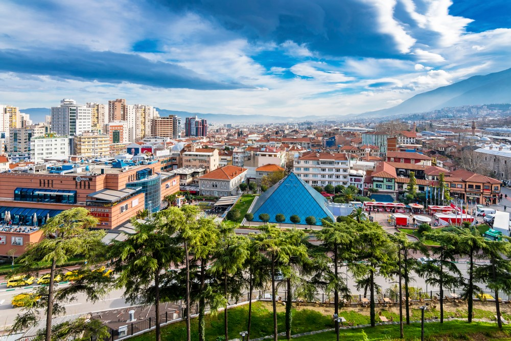
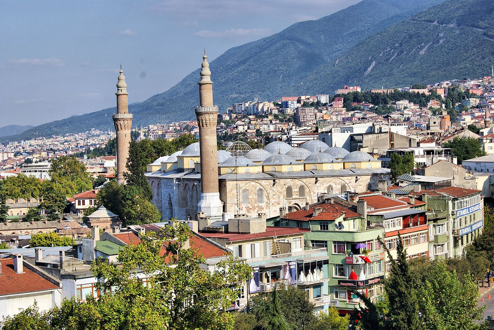
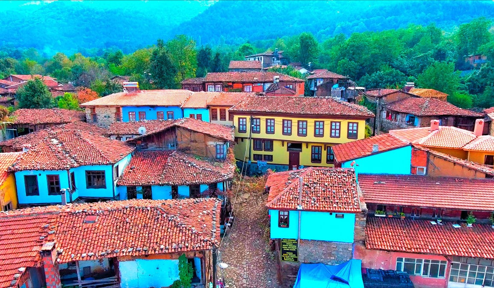
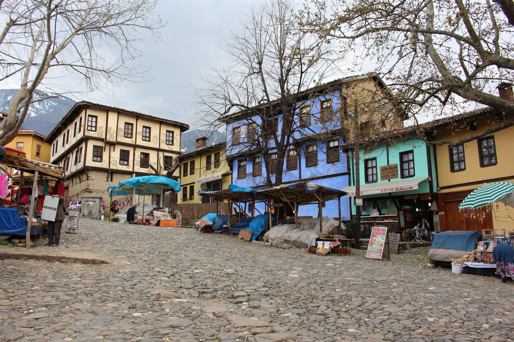
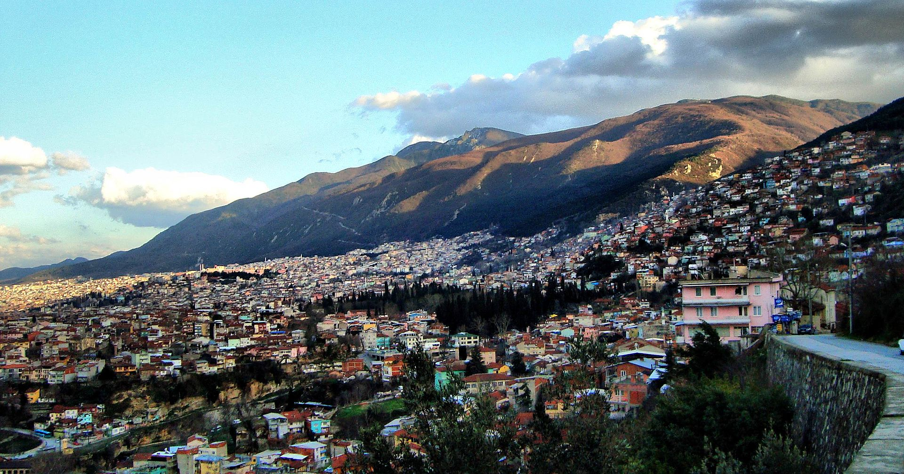

Şehir Hakkında Genel Bilgiler
Türkiye’nin en kalabalık dördüncü şehri olan Bursa; aynı zamanda da 3 milyon nüfusa sahiptir. Öte yandan 2018 yılında yapılan Dünya Yaşanabilir Şehirler listesinde de Dünya’da 28.; ülkemizde ise ilk sırayı almıştır. Marmara Bölgesi’nin Güney Marmara Bölümü’nde yer almaktadır. Eskiden Hüdavendigar olarak adlandırılan bu kentin doğal ve tarihi güzellikleriyle ilgi çektiği de bilinmektedir. Kuzey kısmında Marmara Denizi ve Yalova yer alan Bursa’nın kuzeydoğusunda Kocaeli ile Sakarya, doğusunda Bilecik, güneyinde Kütahya ve batısında da Balıkesir yer almaktadır.
Bursa, geçmişe dair izleriyle de dikkat çeken bir kenttir. Osmanlı Devleti’nin ilk başkenti olması nedeniyle bu döneme ait sayısız eser yer almaktadır. Aynı zamanda da İstanbul’dan sonra Marmara Bölgesi’nin en büyük ikinci kentidir. Sanayisiyle de dikkat çeken bu kentin yine İstanbul’un arkasından gelerek 2. En büyük ihracat merkezi olduğu bilinmektedir. Otomotiv üretim merkezi olarak da dikkat çekmekte ve Türkiye’nin Detroit kenti olarak ifade edilmektedir. Otomotiv konusundaki faaliyetlerin yer aldığı Bursa Otomobil Müzesi de yer almaktadır.
TURİSTİK BÖLGELER:
BURSA ULU CAMİ:
Bursa Ulu Cami, Bursa’da I. Bayezid tarafından 1396-1400 yılları arasında yaptırılmış ulu camidir.
Bursa’nın tarihi sembollerinden olan cami, Bursa kent merkezinde, Atatürk Caddesi üzerindedir. Çok ayaklı cami şemasının en klasik ve anıtsal örneği sayılır. Yirmi kubbeli yapı, Türkiye’deki iç cemaat yeri en geniş camidir. Mimarın Ali Neccar veya Hacı İvaz olduğu sanılmaktadır. Caminin kündekari tekniği ile yapılmış minberi Selçuklu oyma sanatından Osmanlı ahşap oymacılığı sanatına geçişin en önemli örneklerinden biri kabul edilen değerli bir sanat eseridir.
Bursa Ulu Cami, Osmanlı Sultanı I. Bayezid tarafından Niğbolu Seferi’nden dönüşünde verdiği emir ile inşa ettirilmiştir. Caminin yapım tarihini veren bir kitabe yoktur; ancak minber kapısında geçen 802 (1399) tarihi caminin inşa tarihi olarak kabul edilir.

Cumalıkızık:
Kuruluşu yaklaşık 1300'lü yıllara denk gelmektedir.
Bir vakıf köyü olarak kurulan köyde, tarihi dokusu çok iyi korunmuştur ve Osmanlı erken döneminin kırsal kesim sivil mimari örnekleri günümüze ulaşmayı başarmıştır. Bu özelliği nedeniyle çok ilgi çeken ve ziyaret edilen bir yerleşim yeri olmuştur. Sık sık tarihsel filmlere mekan olmaktadır.
Uludağ etekleri ile vadiler arasında sıkışıp kalan köylere kızık adı verilmiştir. Diğer kızık köylerindeki köylülerin eskiden Cuma namazı için toplandığı yer olduğundan bu köyün Cumalıkızık adıyla anıldığı söylenir. Bir başka söylence de, Osman Bey'in köyün kurulduğu günün cuma günü olması sebebiyle bu köye "Cumalıkızık" adını vermiş olduğudur.
Köy meydanında köy geçmişine ait eşyaların sergilendiği bir de müze (Cumalıkızık Etnografya Müzesi) bulunur. Köyde, Haziran ayında "Ahududu Şenliği" yapılmaktadır. Ünlü "Cumalıkızık evleri" moloz taş, ağaç ve kerpiçten yapılır, genelde üç katlıdır. Üst katlardaki pencereler kafesli veya cumbalıdır. Ana giriş kapılarındaki kulplar ve tokmaklar dövme demirden yapılır. Evler sarı, beyaz, mavi, mor renklere boyalıdır. Evlerin arasında kaldırımsız, taş döşeli, çok dar sokaklar bulunur.
Köyün camisi, caminin yanındaki Zekiye Hatun Çeşmesi ve tek kubbeli hamamı Osmanlı devrinden kalmadır. Köyde, Bizans devrinden kalma bir kilise kalıntısı da bulunur. Köyde narenciye, ceviz, kestane yetişir.


ULUDAĞ:
Antik çağın ilk tarihçilerinden Herodot (MÖ 490-420) yazdığı Herodot Tarihi isimli kitabında Uludağ, "Olympos" olarak geçer ve Olympos'ta Lydia kralı Kroisos'un oğlu Atys'in yaşadığı trajediyi anlatır. Herodot'tan 400 yıl sonra Amasya doğumlu coğrafyacı Strabon (MÖ 64-MS 21) yazdığı 17 kitaptan oluşan Coğrafya isimli kitabında Uludağ, Olympos ve Mysia Olympos'u olarak geçer. Strabon; "Mysia" isminin aslının Lydia'lılarda gürgen ağacı anlamına gelmekte olduğunu belirtir. Roma İmparatorluğu'nda resmi din hıristiyanlık olduktan sonra Uludağ'da 3. yüzyıldan sonra keşişlerin yaşadığı ilk manastırlar kurulmaya başlanmış ve manastırlar 8. yüzyılda sayıca en üst seviyeye çıkmıştır. Uludağ'da Nilüfer çayı ile Deliçay arasındaki vadi ve tepelerde 28 manastır kurulmuştur. Orhan Gazi Bursa'yı uzun bir kuşatmadan sonra teslim almış ve dağdaki keşişlerin yaşadığı manastırların bir kısmı terk edilirken[1], bazılarının yerlerine Doğlu Baba, Geyikli Baba, Abdal Murat gibi müslüman dervişlerin inziva yerleri olmuştur. Bursa'nın fethinden sonra Türkler dağa "Keşiş Dağı" ismini vermişlerdir. 16. yüzyılda Bursa'ya gelen Alman seyyah Reinhold Lubenau Uludağ'ın Türklerin eline geçtikten sonra keşişlerin sadece gündüzleri ibadet için dağa çıktıkları ve manastırların harç kullanılmadan taş duvarlarla yapıldığını belirtir. "Olympos Mysios" veya "Keşiş dağı", 1925 yılında Bursa Vilayeti Coğrafya Cemiyeti'nin girişimleri ve Osman Şevki Bey’in önerisi ile "Uludağ" adını almıştır.
